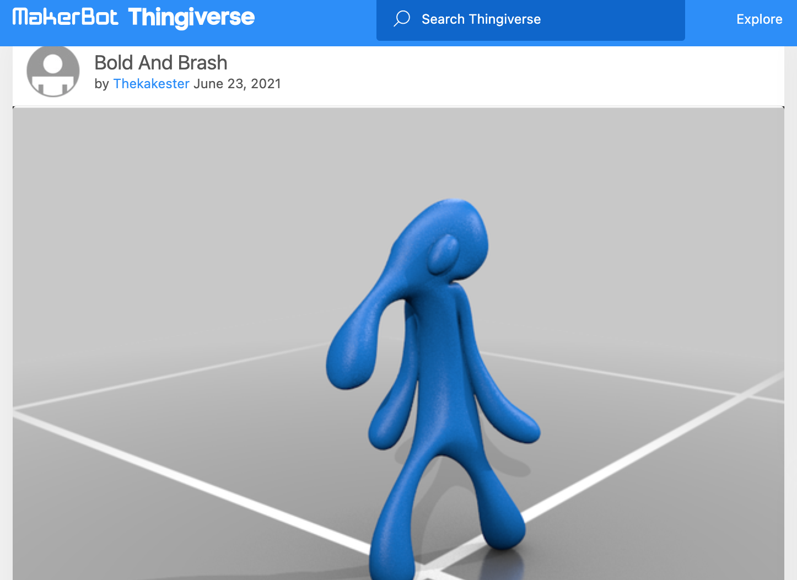
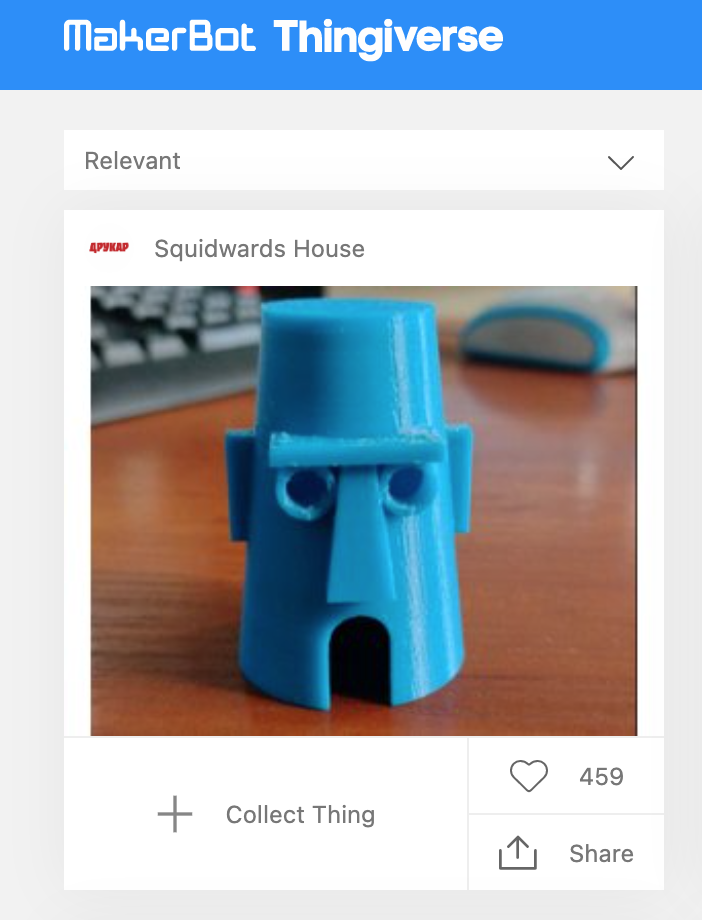
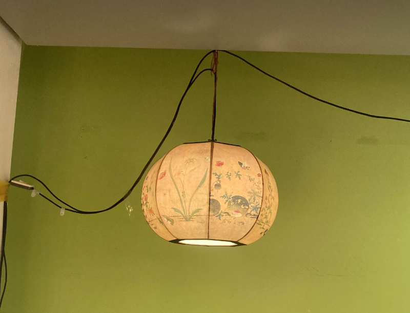
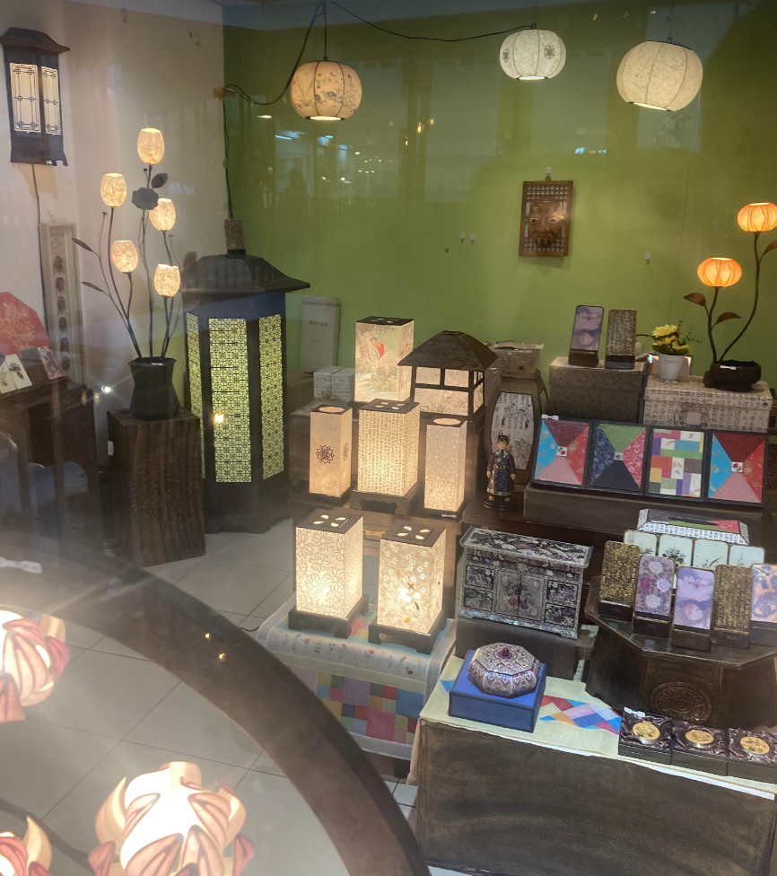
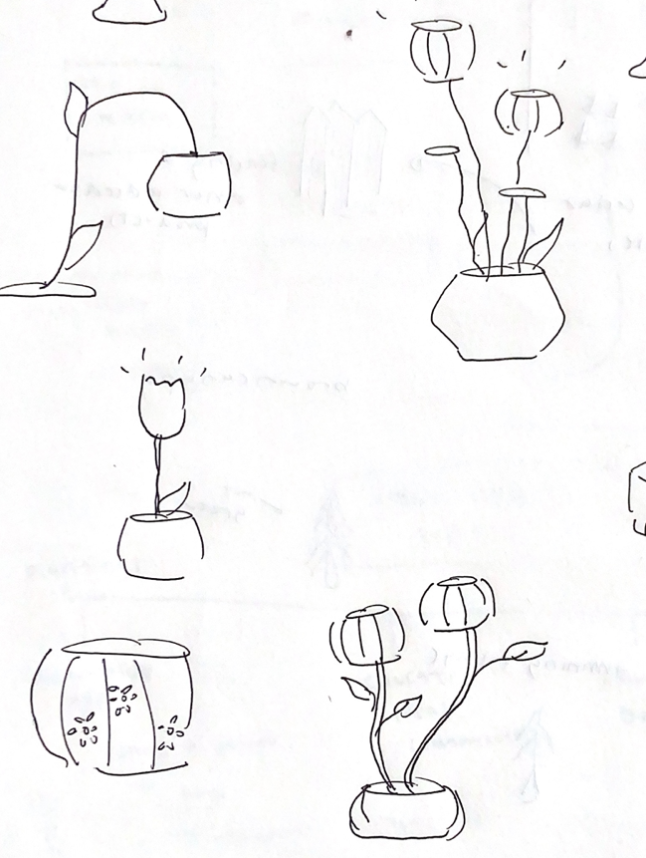
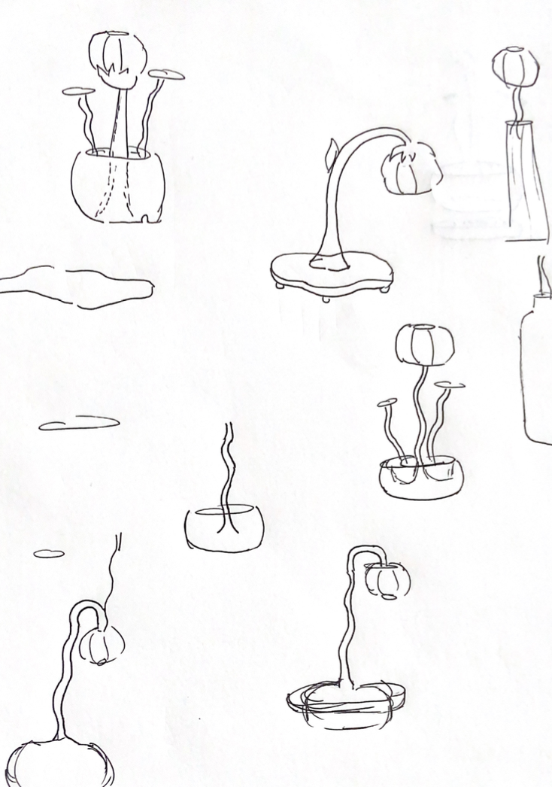
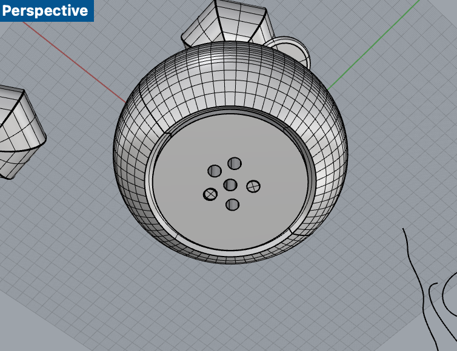
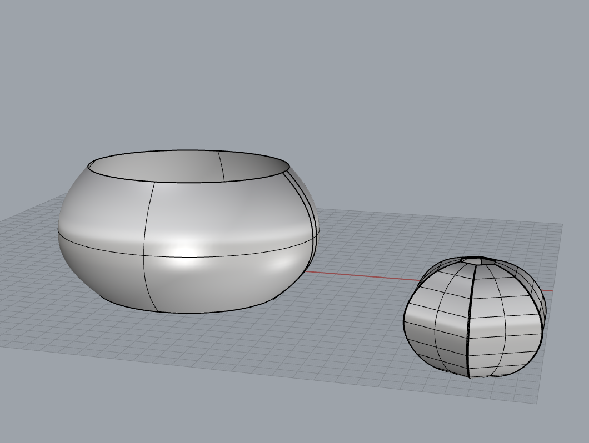
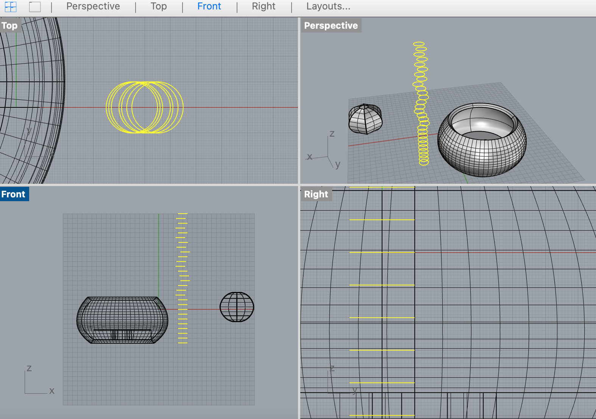
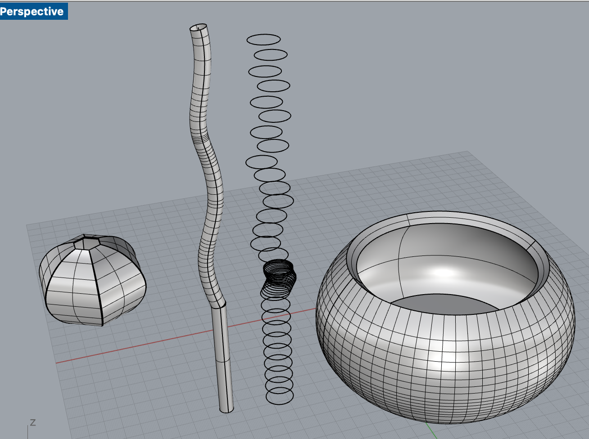

Part 1 - Mesh
For the first part of the assignment, I decided to modify the mesh of two STLs from Thingiverse. First, I had to rewatch lecture to make sure I understood the mesh commands, and then I browsed Thingiverse. I wanted to do something related to Spongebob because it was my favorite show growing up, so I looked up Squidward’s House and Bold and Brash, downloaded the files and decided to make Bold and Brash figure stand on top of Squidward’s House.
|

|

|
I imported the STL files to Rhino and modified the orientation of each object so that they were upright. Once doing so, I placed Bold and Brash on top of Squidward’s House and used the MeshBooleanUnion command to make them into one closed mesh. It worked easily.

I actually tried printing it and it turned out super squished, so I realized there was something wrong with my calibration or Z offset. I tried leveling and releveling the bed but nothing seemed to work. My bed calibration tests came out inconsistent every time. I watched many videos and read blogs abour inconsistent Z prints, and I decided to follow a video about fixing Z axis binding on the Z rod. When I was taking out the Z-rod, I realized one of the screws that held the Z rod, was loose! Once I tightened that, all my problems with the Z-rod went away.
Part 2 - Lamps
Brainstorming
I was so excited for this project! Mainly because I like looking at different types of lamps for fun. For example, I really like the Panthella Lamp by Louis Poulsen.
I also thought back to my South Korea trip over the summer, and I remember seeing paper lamps in Insa-dong and thinking they were beautiful. These lamps are called‘Han-ji Lamps’ 한지 램프, han for korean and ji for paper. This type of papermaking is an ancient practice that is very involved.
|

|

|
Hanji lamps come in many different forms, and every part of the lamp (besides the lightbulb and electric elements) is made of hanji.
My lamp is not a hanji lamp because it will be 3D printed; however, these lamps inspired my designs.
Sketches
|

|

|
I sketched some ideas for the lamp. I really wanted to have multiple flowers, but that meant I had to wire multiple lightbulbs together and I didnt' know how to do that. I liked the persimmon shape and the tulip shape ideas.
Rhino
In Rhino, I tried modeling a few of those ideas. I started off with the tulip shape by creating a curve and revolving it 360 degrees. However, the tulip shape looked like a cup because the top edge was straight.
Then I tried the persimmon shape by creating 5 hexagon curves, positioning them on the Y-axis accordingly, and using the "Loft" command to create a round 3D shape. I made the thickness of the lamp 0.4mm by using OffsetSrf because I felt that a thin width would allow enough light to pass through. It looked really good! I didn't have the correct measurements yet because I ordered a different light fixture instead of the one that was recommended in class.
Test Print
To ensure the lantern shape turned out ok and let light through, I decided to print it. For the extra settings, I printed it with supports and with a spiralized outer contour to make sure there would be no support structures printed inside. After it printed, I tested the light and it looked really nice.
More Modeling
I decided to model more of my lamp structure, which includes the base, flower pot, and stems. The base is a cylinder with a few holes to fit the stems of flowers. The flower pot is a curve that was revolved, which hides the base structure. For the flower stems, I used the Sweep1 function to create squiggly tubes and cylinders, and I may have to print the stems in separate parts.
|

|

|
|

|

|
To Do
I still need to get the correct measurements of my light fixture once it arrives and scale my Rhino model accordingly. I also need to trim parts of the base to account for my electric cord.